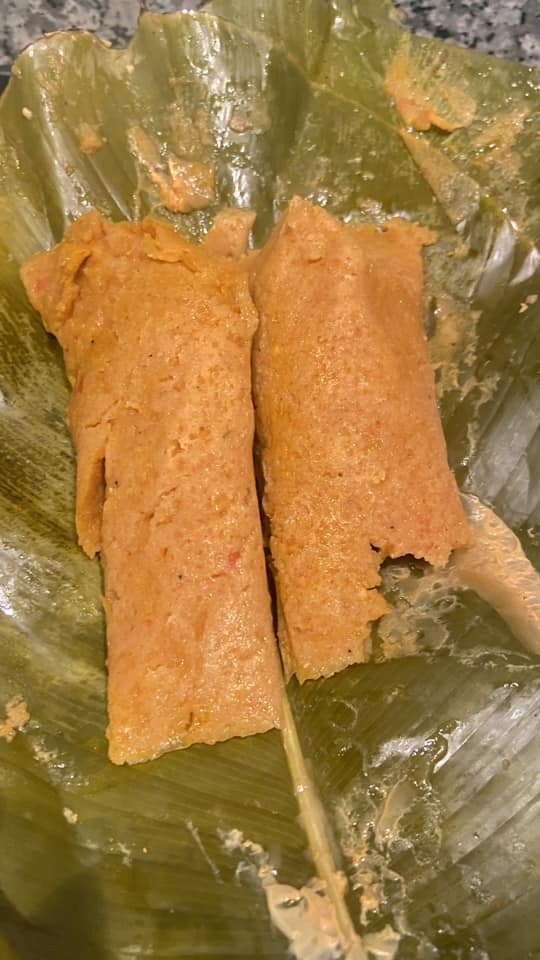
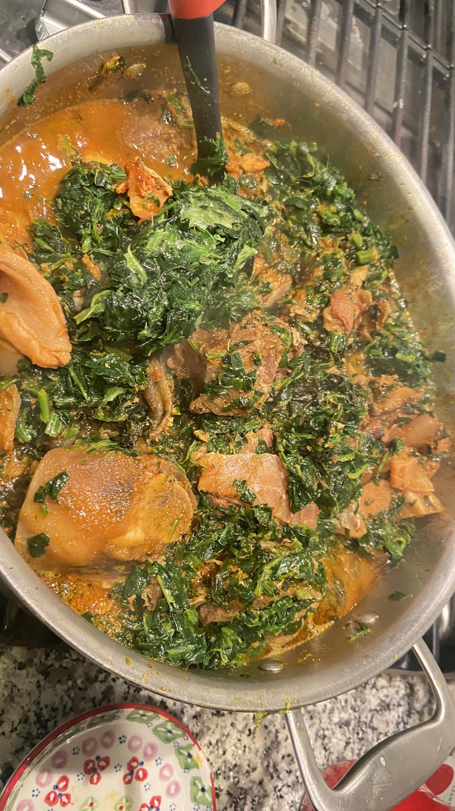

Ebangha Cakes & Pastries
Your fresh and home-made pastries for all your occassions

|
About Us |
|
|
Welcome to Ebangha Cakes & Pastries. We create hand crafted bespoke bakes to make any ocassion special. From unique center pieces to elegant cupcakes our bakes help create lasting memories and all with that delicious homemade taste we are known for. |
||
| Check my Youtube Channel |
Our Products
Below is the list of our products
 |
Banana CakeA cross between banana bread and a drizzle cake, this easy banana loaf recipe is a quick bake that can be frozen. It's great for using up overripe bananas, too. |
 |
Koki BeansKoki Beans - moist, tasty pudding-like steamed treat made with coarsely grounded black-eyed peas and some spinach. Great as a meal on its own or with boiled plantains! |
 |
Jollof RiceThis JOLLOF RICE and CHICKEN is an easy yet tasty one-pan meal enjoyed in West African countries. It’s bursting with flavors from the tomato sauce, paprika, scotch bonnet, and the juices coming off from the well-seasoned chicken thighs. Serve it over regular nights or as a main course during the holidays! |
 |
Kwacoco BibleKwacoco Bible - made from grated coco yam and mixed with spinach, smoked fish, red oil and other spices. It is wrapped in plantain leaves, steamed until cooked through. Very filling, flavorful and aromatic side dish! |
 |
Meat PieMeat Pie (Beef Empanada)- slightly sweet, flaky and crusty with a succulent beef filling. Comes together quickly and flies off the table. Simply Delicious!! |
 |
Stewed SpinashStewed Spinach - Super simple way of enjoy spinach African style – bursting with a good amount of greens and delivers the perfect amount of spice. A quick and easy way of putting greens on the table. |